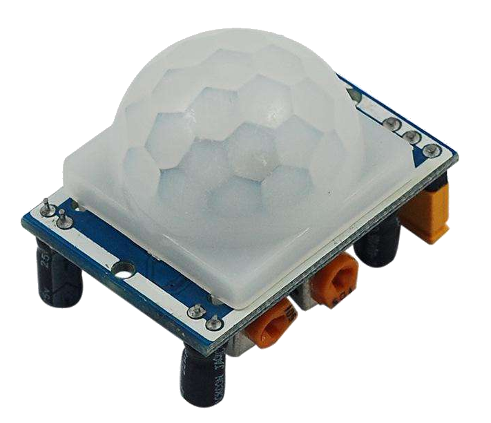

Project Theme
Build a smart oscillating fan with Raspberry Pi Pico, a motor drive path, and simple sensing or remote interaction.
Course website rebuilt from the existing PPT decks
This version is designed as a teaching website instead of a showcase page. It follows the lecture materials more closely: first the board and firmware, then digital control, PWM and sensing, then mechanical structure, and finally the full smart oscillating fan build.
Overview
Across the three PPT decks, the course repeatedly combines electronics, mechanical structure, and programming. The final project is a smart adjustable fan, but the deeper goal is to help students understand how sensing, actuation, transmission, and code fit into one coherent system.
Build a smart oscillating fan with Raspberry Pi Pico, a motor drive path, and simple sensing or remote interaction.
Digital I/O, PWM, analog input, mechanism design, gear transmission, linkage motion, and hands-on assembly.
Short concept explanation, quick hardware demonstration, simple code practice, then integration into one classroom build.
Students finish with a physical object they can explain: what moves, what senses, what controls, and why it works.
Objectives
Learn the Pico X2 layout, power interfaces, sensor ports, OLED, and where digital or analog connections belong.
Use LEDs, buttons, and motor direction logic to connect simple code with visible hardware behavior.
Study worm gears, speed reduction, direction change, and four-bar linkage ideas behind fan oscillation.
Combine structure, circuit, sensing, and programming into a complete classroom artifact with a clear functional goal.
Lesson Map
This sequence is based directly on the PPT flow. It is designed so an instructor can teach from top to bottom without needing to mentally reorganize the original slides.
Introduce the control board, explain the ports, then walk through firmware update and initial board preparation.
Use LED and button activities to establish the idea that code can read state and drive visible output.
Move from on/off control to variable behavior such as fading light, ADC reading, and RGB lighting with WS2812B.
Explain how rotating motion becomes oscillating motion by combining worm gears, reduction, and a four-bar linkage.
Bring together structure, code, and interaction features such as Bluetooth or sensor response into one finished build.
Build Kit
The PPT objective slides list the course materials explicitly. This section turns that list into a clean checklist so the site is useful before class starts, not only during a presentation.

Used to introduce power, sensor ports, display, and the basic connection points needed before any coding begins.

The structure deck explains how the physical build supports oscillation and why the final motion looks the way it does.

Sensors extend the project from a simple fan into a smart system that can react to the environment.

Small modules help students see how state, thresholds, and conditional logic work in a robotics context.
Mechanism Concepts
A mechanism is presented as two or more machine parts working together to produce a predictable motion path and function.
The decks emphasize two key purposes: changing motion direction and reducing speed before the linkage stage.
The fan oscillation example becomes easier to explain when the crank, connecting rod, and rocker are separated conceptually.
Programming Practice
Best used as the first success moment. Students see immediate output and learn the feel of the environment.
from machine import Pin
import time
led = Pin("LED", Pin.OUT)
while True:
led.toggle()
time.sleep(1)This is where the class moves from passive output to conditional logic and simple interaction.
from machine import Pin
from time import sleep
led = Pin(25, Pin.OUT)
btn = Pin(3, Pin.IN)
while True:
led.value(btn.value())
sleep(0.3)The project becomes more robotics-like once distance is mapped to behavior through clear thresholds.
dist = sensor.ping()
if dist < 10:
sensor.rgb_all(utils.COLOR_RED)
elif dist < 20:
sensor.rgb_all(utils.COLOR_BLUE)
else:
sensor.rgb_all(utils.COLOR_GREEN)This is the bridge between software commands and the fan's actual motion in the final build.
def forward():
_set_motor(M1_A, M1_B, 1)
_set_motor(M2_A, M2_B, 1)
def turn_left():
_set_motor(M1_A, M1_B, -1)
_set_motor(M2_A, M2_B, 1)Teaching Use
Prepare firmware, hardware kits, and the board connection test so setup time stays predictable.
Alternate between one concept slide, one wiring idea, and one short code example to keep attention grounded.
Move from simple proof-of-concept tasks to subsystem integration, then demonstrate the full oscillating system.
Ask students to explain the full chain: input, control logic, motor action, transmission, and final mechanical motion.
Resources
The page is built from the existing robot-course materials and reshaped into a more teachable sequence. It is ready for GitHub Pages and can keep growing with downloadable handouts, source code links, or future lesson pages.
Board functions, firmware, digital I/O, PWM, ADC, and practical coding examples.
Linkages, worm gears, speed reduction, direction change, material list, and assembly logic.
A combined teaching path that mixes mechanism explanation and control examples.
Used in the PPT materials as the visual programming environment for board interaction.
Open download linkThe site is already structured as a static repository and ready for GitHub Pages deployment.
Open repositoryPlain HTML, CSS, and JS make the site lightweight, easy to maintain, and simple to publish for teaching use.